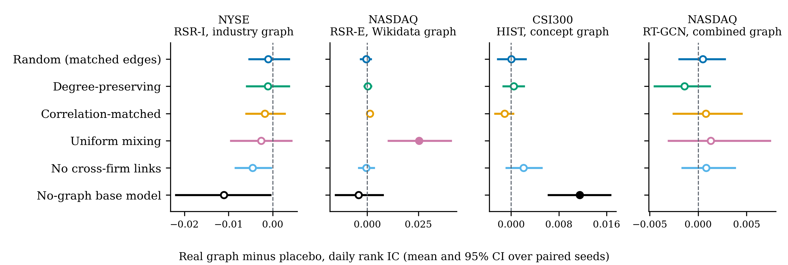
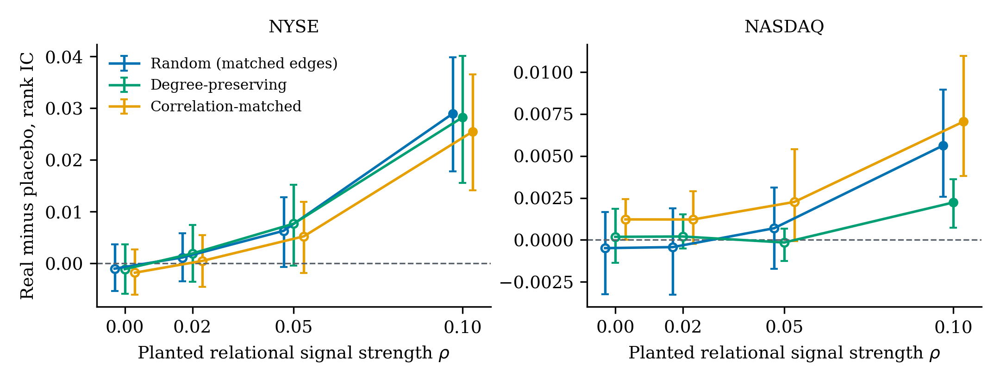

Graph-based stock forecasters report gains from links between firms, such as shared industries, knowledge-base relations or business concepts, yet comparisons with sequence-only baselines cannot separate the value of the specific links from the architecture that processes them. We propose a placebo-graph test for this attribution: the forecaster is retrained with placebo graphs that keep the real graph’s number of links, and in one variant every firm’s number of links, but scramble which firms are linked, and the paired difference in daily rank correlation is estimated over training seeds and test days. Across three published models in four model-market cells, the real graph forecasts no better than its random placebo in any cell, with equivalence bounds of 0.002 to 0.005 in daily rank correlation, and forecast-comparison tests and portfolio returns agree. Where models beat simpler baselines, the gain does not depend on the identities of the curated links. A planted-signal experiment shows that one model converts a strong constructed neighbour signal into a detectable gain, while two others do not learn it under their published training protocols. The test is cheap and model-agnostic, and it gives forecasters a routine check of whether the specific links of a relational input add predictive value.
Keywords: forecast evaluation; placebo test; graph neural networks; stock return prediction; equivalence testing; reproducibility
A growing literature forecasts stock returns with graph neural networks that pass information between related firms. The relations come from industry classifications, knowledge bases such as Wikidata, business-concept tags, supply chains or co-movement (Feng et al. 2019; Kim et al. 2019; Sawhney et al. 2021; Xu et al. 2021; Zheng et al. 2023). The economic motivation is sound: news and returns propagate along economic links (Cohen and Frazzini 2008), and industry effects explain part of momentum (Moskowitz and Grinblatt 1999). Published models report gains over sequence-only baselines and attribute them to the relation graph, in a field where machine-learning forecasts of returns are now standard (Gu, Kelly, and Xiu 2020) and graph convolutions over corporate relations were introduced early (Chen, Wei, and Huang 2018).
That attribution is rarely tested. A relational model differs from its sequence-only baseline in two ways at once: it receives the relation graph, and it has extra machinery for mixing information across stocks. A gain over the baseline can come from either. The comparison that isolates the graph keeps the machinery and replaces the graph with a placebo that keeps its number of links, and in one variant every firm’s number of links, but scrambles which firms are linked. If the real graph does not beat such a placebo, the model’s gain cannot be attributed to the specific relations it was given.
This paper introduces PlaceboGraph, a validation protocol built on that comparison. A forecaster is retrained under a family of placebo graphs, each preserving a different property of the real graph: the number of links, every firm’s number of links, the training-period co-movement structure, or none of the structure (uniform mixing across all firms, or no cross-firm links at all). The real graph’s advantage over each placebo is estimated with seeds paired across conditions and a block bootstrap over test days, and the family of comparisons is corrected for multiple testing. Which placebo closes the gap diagnoses what the graph contributes.
We apply the protocol to three published models, each run on the authors’ data with the authors’ code (RSR in a PyTorch port verified against the original) and first reproduced against its published results or released checkpoint: the Relational Stock Ranking model of Feng et al. (2019) on NYSE and NASDAQ with industry and Wikidata relations, HIST (Xu et al. 2021) on the Chinese CSI300 with business-concept relations, and RT-GCN (Zheng et al. 2023) on NASDAQ with combined industry and Wikidata relations. In no model-market cell does the real graph forecast detectably better than its random placebo, which shares only a chance fraction of its links, or its degree-preserving placebo. The primary test, a two-way bootstrap of the daily rank correlation, finds no difference against any structure-matched placebo, and Diebold-Mariano and Giacomini-White tests (Diebold and Mariano 1995; D. Harvey, Leybourne, and Newbold 1997; Giacomini and White 2006) on the rank correlation find none against the random and degree-preserving placebos. With seeds and test days both resampled, equivalence bounds place the real graph’s advantage over its random placebo within 0.002 to 0.005 in daily rank correlation in each cell, 3% to 9% of the model’s own rank correlation on NASDAQ and CSI300; equivalence at a margin of 0.005 also holds jointly over the four cells for every cell except NYSE, where the model itself has almost no skill.
A null result is only informative if the test can detect an effect. We therefore plant a relational signal into the returns of every market, built from each firm’s real-graph neighbours and orthogonal to the firm’s own inputs, and rerun the placebo family. The control separates two explanations of placebo equivalence. For RSR the protocol detects the planted signal at a strength of 0.10 in correlation with next-day returns against every structure-matched placebo in both markets, and the equivalence bounds of the published RSR graphs against the random placebo lie below the advantage that this signal produces. Detection requires a strong signal: at strength 0.10 the planted term alone ranks NYSE stocks with a rank correlation of 0.15, above the total skill of published models, and a signal half as strong is not detected. We therefore report, for every cell, the smallest advantage the test detects with 80% power. For HIST and RT-GCN, the real graph does not separate from its placebos at a planted strength of 0.10, although the planted term alone ranks test-day stocks with a rank correlation of 0.09 on RT-GCN’s data: RT-GCN’s predictions are uncorrelated with it under every graph, and planting leaves HIST’s rank IC unchanged. These two models, trained with their published recipes, do not learn a neighbour-mean lead-lag signal of this form even when it runs along their own graph.
The protocol also locates where the reported gains come from. On NASDAQ, the Feng et al. model with Wikidata relations beats a uniform-mixing placebo, but random graphs, degree-preserving graphs and a graph without cross-firm links all match it: mixing every firm with the whole market hurts, while sparse links, real or random, add nothing over no links. HIST beats its sequence-only base model, and a concept graph without any links keeps about 80% of that gain; an LSTM trained for HIST’s longer budget recovers about 40% of it. Removing HIST’s learned hidden-concept module shows where the rest comes from: HIST’s architecture with no cross-stock information at all still gains 0.005 over the LSTM, pooling over a concept graph adds 0.004 whether the concepts are real or random, and the real concepts beat random ones by \(-0.0002\) (\([-0.0009, 0.0005]\)).
The contributions are: (i) a model-agnostic placebo-graph protocol with paired inference, a diagnosis rule and an open implementation; (ii) a reproduction-first audit of three published relational stock forecasters across three markets; (iii) a planted-signal control that makes the equivalence results interpretable and separates graphs without usable information from models that do not learn relational signal; and (iv) the full battery of forecast-evaluation tests that the forecasting literature uses to compare models.
Feng et al. (2019) introduced temporal relational ranking with industry and Wikidata relations on NYSE and NASDAQ; Kim et al. (2019) used hierarchical attention over Wikidata relations; Sawhney et al. (2021) used hypergraphs over the same data; HIST (Xu et al. 2021) combines predefined business concepts with learned hidden concepts on CSI300 through the Qlib platform (Yang et al. 2020); RT-GCN (Zheng et al. 2023) adds time-aware relation weighting. Later models learn their graphs from prices, attention or both: THGNN builds a daily graph from price correlation (Xiang et al. 2022), MASTER learns inter-stock attention (Li et al. 2024), and ESTIMATE combines an industry hypergraph with learned dynamics (Huynh et al. 2023); Patel, Jariwala, and Chattopadhyay (2025) survey the field. Models without relation data remain competitive: an MLP without a predefined graph reports results above graph-based and other recent forecasters on stock benchmarks (Fan and Shen 2024), and a model that uses only stock factors, without industry or concept relations, reports an IC on CSI300 slightly above HIST’s (Zhuang et al. 2026). These papers compare against sequence-only baselines and, in some cases, remove one relation type at a time. None reports a placebo graph with the real graph’s size and shape. Niu et al. (2024) evaluate financial relation graphs before any model is trained, by how well a graph explains past co-movement; PlaceboGraph instead tests whether a trained forecaster uses its graph, by retraining it under placebos. Student analyses of graph models for equity returns (Bocconi Students Investment Club (BSIC) 2026a, 2026b) report a single random-graph control in which the random graph matches or beats the real one, without intervals or a family of controls.
Errica et al. (2020) showed that structure-agnostic baselines rival graph networks on graph classification; Bechler-Speicher et al. (2024) showed that graph networks fit uninformative graph structure; Katsman, Lou, and Gilbert (2024) found that many graph benchmarks do not require graph learning. Coupette et al. (2025) propose evaluating graph datasets with perturbed graphs (empty, complete, random and shuffled) for graph-level classification. Hussain et al. (2021) compare stochastic-block-model, configuration-model and Erdős-Rényi nulls to attribute node-classification gains to communities or degree. In spatio-temporal forecasting, simple identity-based and graph-free models match graph models (Shao et al. 2022, 2025; Liu et al. 2023), adaptive graphs replace predefined ones (Bai et al. 2020), and single rewired-graph controls appear in anomaly forecasting (Pillai 2025). In fraud detection, shuffled edges outperform the real transaction graph under temporal shift (Maganti 2026). Rewiring surveys recommend random and degree-preserving baselines (Attali et al. 2024), following the degree-preserving swap of Maslov and Sneppen (2002). PlaceboGraph differs from this work in four respects: a property-indexed family of placebos including correlation-matched graphs, paired inference over time and seeds, a diagnosis rule, and an audit of published forecasters run with their own code and data.
We use the Diebold-Mariano test with heteroskedasticity- and autocorrelation-consistent variance (Diebold and Mariano 1995; Newey and West 1987) and the small-sample correction of D. Harvey, Leybourne, and Newbold (1997), the conditional predictive-ability test of Giacomini and White (2006), which allows for estimated models, the adjusted test of Clark and West (2007) for nested models, the model confidence set (Peter R. Hansen, Lunde, and Nason 2011), which extends the superior-predictive-ability test of Peter Reinhard Hansen (2005) to sets of models, block and stationary bootstraps (Künsch 1989; Politis and Romano 1994), false-discovery-rate control (Benjamini and Hochberg 1995), Sharpe-ratio comparisons (Ledoit and Wolf 2008) and equivalence testing (Schuirmann 1987). Multiple testing in return prediction is a known source of spurious findings (C. R. Harvey, Liu, and Zhu 2016), and recent work documents spurious predictability in financial machine learning from the data side (Nikolopoulos 2026). The forecasting literature asks new methods to beat simple benchmarks under transparent evaluation (Makridakis, Spiliotis, and Assimakopoulos 2020; Petropoulos et al. 2022), to be reproducible (Boylan et al. 2015), and to avoid evaluation pitfalls such as leakage and weak baselines (Hewamalage, Ackermann, and Bergmeir 2023); a placebo graph is the benchmark that matches a relational model’s own architecture. Reproducibility audits in recommender systems found that simple baselines match most neural methods (Ferrari Dacrema et al. 2021); our audit is the relational-forecasting counterpart.
Return predictability along economic links is documented directly: customer returns predict supplier returns (Cohen and Frazzini 2008), industry information diffuses with a lead-lag (Hou 2007) returns cross-predict within related segments (Menzly and Ozbas 2010), and momentum spills over through shared analyst coverage (Ali and Hirshleifer 2020) and technological proximity (Lee et al. 2019). Our planted signal reproduces this mechanism, a neighbour-mean lead-lag spillover, inside the forecasters’ own data. The term follows the placebo and negative-control tests of causal inference, which alter the treatment, the outcome or the population to check that an estimated effect is not an artefact of the design (Lipsitch, Tchetgen Tchetgen, and Cohen 2010; Abadie, Diamond, and Hainmueller 2010; Eggers, Tuñón, and Dafoe 2024); a placebo graph alters the treatment, the relational input, while keeping its structure. Placebo graphs are randomisation controls on the adjacency, related to the bootstrap and permutation inference against data snooping in forecast evaluation (White 2000; Romano and Wolf 2005): the real graph is compared with graphs drawn from a null that preserves a named property of it. Our inference resamples training seeds and test days; it does not build a reference distribution over graph draws.
A relational forecaster \(F\) maps a panel of firm histories \(X\) and a relation graph \(G\) to next-period scores. We write \(G\) as an \(N \times N \times K\) binary tensor over \(N\) firms and \(K\) relation types, so that firms \(i\) and \(j\) are linked if any of the \(K\) entries for the pair is one. The protocol holds \(F\), its hyperparameters, data, training budget and model-selection rule fixed, and varies only \(G\).
Each placebo preserves a named property of the real graph \(G\) and destroys the rest (Table 1).
| Placebo | Preserves | Destroys |
|---|---|---|
| Random | number of links; multiset of relation-type vectors | who is linked to whom |
| Degree-preserving | every firm’s number of links (double-edge swaps)\(^{a}\) | which partners a firm has |
| Correlation-matched | number of links; links placed on the strongest | semantic content of links |
| training-period return correlations | ||
| Uniform mixing\(^{b}\) | nothing; every firm mixes with all others | sparsity and identity |
| Self-loops only\(^{b}\) | nothing; no cross-firm links | all cross-firm information |
| No-graph base model | the model’s sequence component only | the relational component |
The random placebo reassigns the real graph’s relation vectors to the same number of uniformly drawn firm pairs. The degree-preserving placebo attempts ten double-edge swaps per link (Maslov and Sneppen 2002), rejecting swaps that would create self-links or duplicate links, so every firm keeps its number of links while its partners change. For NYSE and RT-GCN the swaps act on the union graph and each link carries its relation vector; for NASDAQ they act within each relation type, which preserves every firm’s degree in every type but can merge or split links across types (2% of firms change their total degree). The correlation-matched placebo places the same number of links on the firm pairs with the highest return correlation over the training period only, and assigns them the real relation vectors at random. This placebo answers whether the real graph adds anything beyond co-movement that a forecaster could estimate from its own training data. Uniform mixing and self-loops-only bracket the space: the first replaces sparse aggregation with a market average, the second removes cross-firm information while keeping the model’s architecture. The no-graph base model is the sequence-only model from which the relational model is built.
Automated checks assert, for every generated graph, the property each placebo is defined to preserve (Appendix, Table 9). They also measure how much of the real graph each placebo retains. The random placebo shares only a chance fraction of the real links (9% on NYSE, 0.2% on NASDAQ, 5% for RT-GCN). On graphs built from dense industry blocks the degree sequence nearly determines the links, so the degree-preserving placebo keeps 77% (NYSE) and 75% (NASDAQ) of the real links in the RSR cells and 32% in the RT-GCN cell; for HIST it keeps 2% of the links in concepts with two or more stocks. HIST’s correlation-matched placebo keeps one true member per concept and retains 68% of the real links. The random placebo is the only placebo whose overlap with the real graph is at chance level by construction, so it is the cleanest null, and we read the other placebos with their overlap in mind.
Every condition is trained with the same \(S\) seeds, so that seed \(s\) shares initialisation and data order across conditions; the graph changes the computation, so paired runs share their random draws up to the graph’s effect, and each seed also draws its own placebo graph. For a daily metric \(m_{c,s,t}\) of condition \(c\), seed \(s\) and test day \(t\) (we use the cross-sectional rank correlation between scores and next-day returns, the rank IC), the real graph’s advantage over placebo \(c\) is \[\Delta_c = \frac{1}{S\,T}\sum_{s=1}^{S}\sum_{t=1}^{T}\left(m_{\mathrm{real},s,t} - m_{c,s,t}\right).\] Confidence intervals come from a two-way bootstrap that resamples seeds with replacement and, independently, contiguous ten-day blocks of test days, drawn as circular moving blocks (Künsch 1989), using the same day blocks for the real graph and the placebo (5,000 resamples). Seed-to-seed training variation therefore enters every interval. The pairing is informative: the across-day correlation of daily rank IC between the real graph and a structure-matched placebo is 0.76 to 0.78 for the same seed on NYSE, against 0.53 to 0.61 for different seeds. In simulations with the split between seed-level and day-level variance measured in these data (seed shares 0.3 to 0.7, ten or 20 seeds), the test rejects a true null in 4% to 8% of samples at the 5% level (300 simulated panels per setting). This comparison of daily rank IC is the primary test; the forecast-comparison tests, the model confidence set and the portfolio comparisons are secondary analyses reported in full. The two-sided \(p\)-value is twice the smaller share of bootstrap means on either side of zero (percentile inversion; with 5,000 resamples its smallest non-zero value is 0.0004), and centred-null \(p\)-values, block lengths of 5 and 20 days and a stationary bootstrap give the same verdicts (Appendix, Table 12). The inference population is training seeds, the placebo draws they carry, and test days; Appendix Table 13 separates variation across placebo draws from variation across seeds. These \(p\)-values are adjusted with the Benjamini-Hochberg procedure (Benjamini and Hochberg 1995) within each family, defined as the placebo comparisons of one model in one market for one metric; we report raw \(p\)-values alongside. Each family contains five or six tests; the forecast-comparison, model-confidence-set, portfolio and equivalence analyses below form separate families, each again defined as one model in one market for one loss or portfolio. We report the same comparisons for top-\(k\) portfolio returns.
The pattern of placebo comparisons identifies what the graph contributes. If the real graph beats random, degree-preserving and correlation-matched placebos, the specific relations carry information. If it beats self-loops but not the structure-matched placebos, sparse aggregation helps but the identity of neighbours does not. If it beats only uniform mixing, dense mixing hurts and sparse links, real or not, add nothing over none. If it beats the no-graph base model but not the placebos, the benefit comes from the architecture. If it beats nothing, the specific links show no detectable contribution at the test’s resolution, which Section 5 reports as a minimum detectable effect.
To show that the test detects relational information when it is present, we plant a signal that runs along the real graph’s links. For firm \(j\) on day \(t\) let \(u_{j,t}\) be a source signal visible in firm \(j\)’s model input on day \(t\). For each firm \(i\) with at least one real-graph neighbour, the planted term \(z_{i,t}\) is the mean of \(u_{j,t}\) over \(i\)’s neighbours, residualised day by day on \(u_{i,t}\) among firms with neighbours and standardised. Firms without neighbours receive no planted term. The planted target is \[\tilde r_{i,t+1} = r_{i,t+1} + \beta\, z_{i,t},\] with \(\beta\) chosen so that the planted term has correlation \(\rho\) with \(\tilde r\) over all training cells (for HIST, whose data arrive as separate splits, within each split; this sets only the scale of the planted term in the target, and no model sees test targets during training or selection). The residualisation removes the planted term’s correlation with firm \(i\)’s own source (at most 0.001 in every market); it does not by itself rule out correlation with the rest of firm \(i\)’s history, so we measure directly how much of the planted term a model without the graph recovers (Appendix, Table 14). We use two sources. The first, for RSR, is a fixed random projection \(u_{j,t}=\langle e_{j,t}, w\rangle\) of the representation \(e_{j,t}\) that the relational module aggregates, the most favourable case for detection (\(\rho \in \{0.02, 0.05, 0.10\}\)). The second, for all three models, is the firm’s most recent daily return in the input window, so the planted term is a lead-lag spillover along the real graph (\(\rho=0.05\) for RSR on NYSE; \(\rho \in \{0.05, 0.10\}\) for HIST and RT-GCN). For HIST, neighbours are stocks that share a predefined concept. The planted term reaches 99% of NYSE firms, 13% of NASDAQ firms in the RSR universe, 87% to 94% of CSI300 stocks and 98% of NASDAQ firms in the RT-GCN universe (47 neighbours on average). We rerun the placebo family at each strength, and report two diagnostics: the oracle rank IC of the planted term (its daily rank correlation with the planted target on test days), and the correlation between each trained model’s test predictions and the planted term.
We port the Relational Stock Ranking model (Feng et al. 2019) to PyTorch, preserving the authors’ TensorFlow initialisation, loss (pointwise squared error plus a pairwise ranking hinge) and two-stage training, in which the relational module consumes the authors’ pretrained sequential embeddings. Data are the authors’ end-of-day panels: 1,737 NYSE and 1,026 NASDAQ stocks, 2013 to 2017, with their validation and test split (test year 2017, 237 trading days). On NASDAQ only 13% of firms have a Wikidata neighbour. The authors’ features scale each stock’s prices by its maximum over 2013 to 2017, including the test year; this look-ahead is part of the published benchmark and is identical in every condition we compare. We study the published best cells: the implicit-relation model (RSR-I) with industry relations on NYSE, and the explicit-relation model (RSR-E) with Wikidata relations on NASDAQ. Each condition is trained for 50 epochs with 20 seeds and the authors’ market-specific hyperparameters, and keeps the epoch with the lowest validation loss; training windows follow the authors’ code, in which the targets of the last training windows fall in the first days of the validation period.
We run HIST (Xu et al. 2021) through Qlib (Yang et al. 2020) on the Alpha360 features of CSI300 constituents, with Qlib’s benchmark configuration: training 2008 to 2014, validation 2015 to 2016, test January 2017 to July 2020 (871 test days). The predefined graph is the public stock-to-concept matrix (735 stocks by 4,635 concepts, 7,478 links). HIST is initialised from a Qlib LSTM trained with the same seed; that LSTM is the no-graph base model. For the concept graph, the random placebo moves links uniformly, the degree-preserving placebo swaps links while keeping every stock’s and every concept’s size, and the correlation-matched placebo keeps each concept’s size and one randomly chosen true member and fills the remaining slots with that member’s most correlated stocks over the training period. HIST’s empty placebo removes every stock-to-concept link, so no information flows through predefined concepts; it is reported in the no-cross-firm-links row. HIST’s learned hidden-concept module still mixes information across stocks under every placebo, so HIST always has a learned graph in addition to the predefined one.
We run RT-GCN (Zheng et al. 2023) with the authors’ model code and data: 854 NASDAQ stocks with 136 industry and Wikidata relation types (39,669 linked pairs, 98% of stocks linked), 1,295 training days and 172 test days, and the authors’ configuration (time-aware relation weighting, Adam with learning rate 0.1 decayed at epochs 5 and 25, weight decay 0.1, batch 64, 100 epochs). The authors’ code keeps the epoch with the lowest test loss; we hold out the last 20% of the training days for validation and keep the epoch with the lowest validation loss in every condition. RT-GCN always adds self-loops, so its uniform-mixing placebo is a complete graph with a single relation type.
Table 2 compares our real-graph runs with published results. RSR matches the published mean squared errors to within 0.7% and the published top-1 investment returns within one seed standard deviation; HIST and its LSTM base reproduce Qlib’s 20-seed benchmark to within 0.002 in IC. RT-GCN reaches a mean rank IC of 0.037 over ten seeds; the authors’ released checkpoint, scored with the same evaluation code, reaches 0.028, so we compare against the checkpoint, which our runs exceed.
| Market | Model | Metric | Published | Ours | Seeds |
|---|---|---|---|---|---|
| NYSE | RSR-I (industry) | MSE | 2.26e-04 | 2.27e-04 | 20 |
| top-1 IRR | 1.06 \(\pm\) 0.27 | 0.96 \(\pm\) 0.58 | 20 | ||
| NYSE | Rank-LSTM (no graph) | MSE | 2.28e-04 | 2.27e-04 | 20 |
| top-1 IRR | 0.56 \(\pm\) 0.68 | 0.41 \(\pm\) 0.69 | 20 | ||
| NASDAQ | RSR-E (Wikidata) | MSE | 3.80e-04 | 3.79e-04 | 20 |
| top-1 IRR | 0.81 \(\pm\) 0.85 | 0.87 \(\pm\) 0.63 | 20 | ||
| NASDAQ | Rank-LSTM (no graph) | MSE | 3.79e-04 | 3.80e-04 | 20 |
| top-1 IRR | 0.68 \(\pm\) 0.60 | 0.52 \(\pm\) 0.83 | 20 | ||
| CSI300 | HIST (concepts) | IC | 0.0522 | 0.0503 \(\pm\) 0.0035 | 10 |
| rank IC | 0.0667 | 0.0661 \(\pm\) 0.0025 | 10 | ||
| LSTM (no graph) | IC | 0.0448 | 0.0445 \(\pm\) 0.0037 | 10 | |
| rank IC | 0.0549 | 0.0545 \(\pm\) 0.0024 | 10 | ||
| NASDAQ | RT-GCN (time-aware) | rank IC | 0.0278\(^{a}\) | 0.0374 \(\pm\) 0.0040 | 10 |
Figure 1 and Table 3 report the real graph’s advantage in daily rank IC over each placebo. Against the three structure-matched placebos (random, degree-preserving and correlation-matched), 12 of 12 comparisons across 4 model-market cells show no difference after the Benjamini-Hochberg correction.

| Market (model, graph) | Placebo | \(\Delta\) rank IC | 95% CI | \(p\) | \(q_{\mathrm{BH}}\) | Verdict |
|---|---|---|---|---|---|---|
| NYSE (RSR-I, industry) | Random | -0.0010 | [-0.0053, 0.0037] | 0.644 | 0.646 | no difference |
| Degree-preserving | -0.0011 | [-0.0059, 0.0037] | 0.646 | 0.646 | no difference | |
| Correlation-matched | -0.0018 | [-0.0060, 0.0027] | 0.420 | 0.646 | no difference | |
| Uniform mixing | -0.0026 | [-0.0095, 0.0042] | 0.436 | 0.646 | no difference | |
| No cross-firm links | -0.0046 | [-0.0084, -0.0004] | 0.037 | 0.124 | no difference | |
| No-graph base model | -0.0111 | [-0.0219, -0.0005] | 0.041 | 0.124 | no difference | |
| NASDAQ (RSR-E, Wikidata) | Random | -0.0005 | [-0.0032, 0.0017] | 0.759 | 0.784 | no difference |
| Degree-preserving | 0.0002 | [-0.0014, 0.0019] | 0.768 | 0.784 | no difference | |
| Correlation-matched | 0.0012 | [0.0000, 0.0024] | 0.046 | 0.138 | no difference | |
| Uniform mixing | 0.0254 | [0.0104, 0.0409] | \(<\)0.001 | 0.005 | real better | |
| No cross-firm links | -0.0005 | [-0.0041, 0.0033] | 0.784 | 0.784 | no difference | |
| No-graph base model | -0.0042 | [-0.0155, 0.0075] | 0.450 | 0.784 | no difference | |
| CSI300 (HIST, concepts) | Random | 0.0000 | [-0.0022, 0.0025] | 0.975 | 0.975 | no difference |
| Degree-preserving | 0.0004 | [-0.0013, 0.0021] | 0.570 | 0.712 | no difference | |
| Correlation-matched | -0.0011 | [-0.0027, 0.0004] | 0.137 | 0.244 | no difference | |
| No cross-firm links | 0.0021 | [-0.0008, 0.0051] | 0.146 | 0.244 | no difference | |
| No-graph base model | 0.0115 | [0.0063, 0.0167] | \(<\)0.001 | \(<\)0.001 | real better | |
| NASDAQ (RT-GCN, industry and Wikidata) | Random | 0.0005 | [-0.0019, 0.0028] | 0.640 | 0.653 | no difference |
| Degree-preserving | -0.0014 | [-0.0045, 0.0012] | 0.279 | 0.653 | no difference | |
| Correlation-matched | 0.0008 | [-0.0025, 0.0045] | 0.634 | 0.653 | no difference | |
| Uniform mixing | 0.0013 | [-0.0030, 0.0074] | 0.653 | 0.653 | no difference | |
| No cross-firm links | 0.0008 | [-0.0016, 0.0038] | 0.563 | 0.653 | no difference |
On NASDAQ the Wikidata graph beats uniform mixing by 0.025 in rank IC (\(q=0.005\)), while random, degree-preserving and correlation-matched placebos match it, and so does the graph without cross-firm links (\(-0.0005\)). Uniform mixing lowers accuracy; sparse links, real or random, add nothing over none. On CSI300, HIST beats its LSTM base by 0.012 in rank IC (\(q<0.001\)), yet every concept placebo, including the graph without concept links, retains that gain: the link-free graph keeps about 80% of it. HIST’s improvement over the LSTM comes from its additional modules and their training, not from the predefined concepts. An LSTM trained further with HIST’s optimisation budget gains 0.005 (95% CI [0.003, 0.007]), and HIST still exceeds it by 0.007 ([0.001, 0.012]). HIST’s learned hidden-concept module still mixes information across stocks under every concept placebo, so we also remove it (Appendix, Table 16); both LSTM bases and an unmodified HIST run reproduce the main grid exactly. Without the hidden module and without any concept link, HIST still beats the LSTM by 0.005 (95% CI [0.003, 0.008]), the same gain as the further-trained LSTM; adding the real concepts raises this to 0.009, and random concepts do as well (real minus random \(-0.0002\), \([-0.0009, 0.0005]\)). The hidden module adds 0.002 (\([-0.0003, 0.0051]\)). Pooling over concepts helps HIST, but which stocks a concept groups does not, a learned or random grouping serving as well as the curated one, as adaptive graphs do in spatio-temporal forecasting (Bai et al. 2020). Holding out the validation period strictly from the RSR training windows leaves every verdict of the full placebo family unchanged in both markets (ten seeds; Appendix, Table eftab:strict). Variation across placebo draws is small next to variation across training seeds: drawing five random graphs per seed changes the NYSE difference by a standard deviation of 0.002, against 0.006 across seeds, and averaged over draws the real graph’s advantage over the random placebo is 0.0019 (95% CI [\(-\)0.0048, 0.0086]) on NYSE and 0.0002 ([\(-\)0.0021, 0.0029]) on NASDAQ (Appendix, Table eftab:draws). On NYSE no condition differs from the real graph after correction; the raw intervals against the graph without cross-firm links and the no-graph base model lie below zero (\(q=0.12\)). RT-GCN on NASDAQ, which uses a dense graph combining industry and Wikidata relations, matches every placebo, including the graph without cross-firm links: the time-aware relation weighting adds no forecasting value with the real relations, with random ones, or with none. With seeds resampled and the family corrected for multiple testing, no comparison with a structure-matched placebo is significant. The smallest raw \(p\)-value, NASDAQ against the correlation-matched placebo (0.0012, 95% CI [0.0000, 0.0024], \(p=0.046\), \(q=0.14\)), reflects a placebo that forecasts slightly worse than random wiring: against the random and degree-preserving placebos the real graph’s advantage is \(-0.0005\) and \(0.0002\). Within NASDAQ the 133 firms with a Wikidata neighbour carry the real graph’s information; among them the real graph’s advantage over the random placebo is 0.0009 (95% CI [\(-\)0.0068, 0.0083]), and against the correlation-matched placebo only the interval for the 893 firms without real neighbours, which that placebo links, excludes zero (Appendix, Table 15). A seed-only \(t\)-test, which treats the test period as fixed, also flags this gap, as the per-seed forecast-comparison tests below do. The two largest point estimates in magnitude against structure-matched placebos (NYSE correlation-matched and NASDAQ RT-GCN degree-preserving) favour the placebo. The verdicts are stable over time: computed separately on the first and second half of each test period, the real graph beats no structure-matched placebo in either half.
The placebos differ in how they distribute links. The degree-preserving placebo keeps every firm’s number of links exactly (NYSE: maximum 499, median 29, as in the real graph). The random placebo flattens the distribution (NYSE maximum about 210), and the correlation-matched placebo concentrates links on highly co-moving firms (NYSE maximum 1,008, 11.5% of firms without links). Agreement across placebos with such different degree distributions shows that the equivalence does not depend on one particular graph shape.
Figure 2 and Table 5 report the positive control for RSR. On NYSE the real graph’s advantage over each structure-matched placebo grows with \(\rho\); at \(\rho=0.02\) and \(0.05\) every interval against a structure-matched placebo includes zero in both markets. At \(\rho=0.10\) the real graph beats every graph placebo in both markets and, on NYSE, the no-graph base model. The oracle rank IC of the planted term is 0.08 at \(\rho=0.05\) and 0.15 at \(\rho=0.10\) on NYSE; the daily rank correlation of the strongest models in the Qlib CSI300 benchmark lies between 0.05 and 0.07 (Yang et al. 2020). The planted term is learnable from the graph: a no-graph RSR model on the planted NYSE data reaches a rank IC of 0.02, while the same predictions combined with the planted term, weighted on the validation period, reach 0.08 at \(\rho=0.05\) and 0.15 at \(\rho=0.10\) (Appendix, Table 14). RSR captures part of it: under the real graph its predictions correlate 0.04 (\(\rho=0.05\)) and 0.07 (\(\rho=0.10\)) with the planted term, against 0.00 under the random placebo. At \(\rho=0.05\) its advantage over the random placebo (0.0063) equals the minimum detectable effect of the unplanted design (0.0064); at \(\rho=0.10\) (0.029) it is four times larger. The protocol therefore resolves a relational signal once the trained model converts it into a rank-IC gain of about 0.006 on NYSE and 0.004 on NASDAQ. The realistic return-based signal at \(\rho=0.05\) on NYSE produces a real-graph advantage of 0.003 against each structure-matched placebo (Table 4), with intervals that include zero whether or not seeds are resampled, and the trained RSR models barely track the planted term: their test predictions correlate \(+0.003\) with it under the real graph and \(-0.015\) under each placebo (20 seeds, pooled over planted test cells).
The same control applied to HIST and RT-GCN separates a different explanation. At \(\rho=0.10\), the real graph does not beat any structure-matched placebo for either model, although the planted term carries ranking information: its oracle rank IC on RT-GCN’s test days is 0.09, more than twice RT-GCN’s own rank IC. Planting leaves their real-graph rank IC unchanged (HIST 0.066 unplanted and 0.064 planted; RT-GCN 0.037 and 0.038), and RT-GCN’s predictions correlate \(+0.002\) with the planted term under every graph, the real one included. These models, trained with their published recipes, do not learn a neighbour-mean lead-lag signal of this form, although it exists in the data and runs along their own graph. For them, placebo equivalence shows that the trained model does not use this kind of relational signal; for RSR, which separates the real graph from every placebo once a strong planted signal runs along it, placebo equivalence shows that the published graphs carry no relational signal above the minimum detectable effect.
| Model, market | Planted source | \(\rho\) | Random | Degree-preserving | Correlation-matched |
|---|---|---|---|---|---|
| RSR-I, NYSE | embedding | 0.05 | 0.0063 | 0.0077 | 0.0052 |
| embedding | 0.10 | 0.0289\(^{*}\) | 0.0282\(^{*}\) | 0.0255\(^{*}\) | |
| return | 0.05 | 0.0031 | 0.0030 | 0.0028 | |
| HIST, CSI300 | return | 0.05 | -0.0003 | 0.0005 | -0.0003 |
| return | 0.10 | 0.0007 | 0.0010 | 0.0005 | |
| RT-GCN, NASDAQ | return | 0.05 | 0.0001 | 0.0000 | -0.0007 |
| return | 0.10 | 0.0007 | 0.0000 | 0.0004 |

| Market | Placebo | \(\rho=0\) | \(\rho=0.02\) | \(\rho=0.05\) | \(\rho=0.10\) |
|---|---|---|---|---|---|
| NYSE | Random | -0.0010 | 0.0011 | 0.0063 | 0.0289\(^{*}\) |
| NYSE | Degree-preserving | -0.0011 | 0.0019 | 0.0077 | 0.0282\(^{*}\) |
| NYSE | Correlation-matched | -0.0018 | 0.0005 | 0.0052 | 0.0255\(^{*}\) |
| NYSE | Uniform mixing | -0.0026 | 0.0003 | 0.0060 | 0.0333\(^{*}\) |
| NYSE | No cross-firm links | -0.0046 | -0.0022 | 0.0032 | 0.0286\(^{*}\) |
| NYSE | No-graph base model | -0.0111 | -0.0081 | -0.0019 | 0.0232\(^{*}\) |
| NASDAQ | Random | -0.0005 | -0.0004 | 0.0007 | 0.0056\(^{*}\) |
| NASDAQ | Degree-preserving | 0.0002 | 0.0002 | -0.0002 | 0.0022\(^{*}\) |
| NASDAQ | Correlation-matched | 0.0012 | 0.0012 | 0.0023 | 0.0070\(^{*}\) |
| NASDAQ | Uniform mixing | 0.0254\(^{*}\) | 0.0261\(^{*}\) | 0.0278\(^{*}\) | 0.0337\(^{*}\) |
| NASDAQ | No cross-firm links | -0.0005 | -0.0005 | 0.0005 | 0.0052\(^{*}\) |
| NASDAQ | No-graph base model | -0.0042 | -0.0043 | -0.0034 | 0.0010 |
Table 6 reports Diebold-Mariano tests with Newey-West variance and the Harvey-Leybourne-Newbold correction, Giacomini-White conditional tests with the lagged loss differential as instrument, and membership of the 90% model confidence set. Both use the daily loss averaged over the seeds (20 for RSR, ten for HIST and RT-GCN), which compares two seed ensembles; we also run the test for every seed separately, which compares single deployed models. With loss equal to minus the rank IC, the real graph has equal accuracy to the random and degree-preserving placebos for all three models and all three markets; it is more accurate than uniform mixing on NASDAQ and than the LSTM base on CSI300, matching the diagnosis above, and the Diebold-Mariano test also ranks it above the NASDAQ correlation-matched placebo, the placebo that forecasts slightly worse than random wiring (difference 0.0012 in rank IC, \(q=0.013\); Giacomini-White \(q=0.06\)). On NYSE the Diebold-Mariano test ranks the real graph below the graph without cross-firm links and the no-graph base model (\(q=0.036\); Giacomini-White \(q=0.09\)), so its links do not help there. In rank IC the Giacomini-White test finds no difference between the real graph and any structure-matched placebo in any cell. For the nested comparison of each RSR variant with its no-graph base model, the Clark and West (2007) test finds on NASDAQ that every variant with sparse or no cross-firm links, the real graph, the random, degree-preserving and correlation-matched placebos and the graph without cross-firm links alike, improves on the base model in squared error (\(q\le0.0011\)), uniform mixing does not, and on NYSE none does; the relational module helps on NASDAQ regardless of which sparse graph it is given. Per seed (Appendix, Table 17), the real graph is more accurate than a random or degree-preserving placebo in at most 3 of 20 seeds (RSR) or 2 of 10 (HIST, RT-GCN) and less accurate in up to 5 of 20, with no consistent direction; against the NASDAQ correlation-matched placebo it is more accurate in 10 of 20 seeds. With squared-error loss, the daily loss differentials are small but very stable, so they are highly significant, and their sign changes across placebos. They reflect the scale of the predicted returns, not ranking: RSR’s predicted returns have a standard deviation of 0.0003 to 0.0007 on NYSE and 0.0014 to 0.0057 on NASDAQ, against 0.015 and 0.019 for realised returns, so squared error is almost entirely the variance of the returns and moves with small differences in prediction spread. RT-GCN’s predicted returns are over-dispersed (standard deviation 0.42 to 0.49 against 0.033), and the real graph produces among the most dispersed predictions, which is why every placebo attains a lower squared error than the real graph. The model confidence set never singles out the real graph. On NASDAQ it keeps the real graph together with the random and degree-preserving placebos, the graph without cross-firm links and the no-graph base model. In the other three cells it excludes the real graph: on NYSE the no-graph base model has the highest rank IC, on CSI300 the correlation-matched placebo is the only member, and for RT-GCN the set keeps the degree-preserving and uniform-mixing placebos.
| Market | Condition | DM, loss \(=-\)rank IC | GW, loss \(=-\)rank IC | DM, loss \(=\) MSE | In 90% MCS | |||
| stat | \(q_{\mathrm{BH}}\) | \(\chi^2_2\) | \(q_{\mathrm{BH}}\) | stat | \(q_{\mathrm{BH}}\) | |||
| NYSE (RSR) | Real graph | – | – | – | – | – | – | no (0.01) |
| Random | 0.55 | 0.586 | 0.30 | 0.863 | 23.53 | \(<\)0.001 | no (0.02) | |
| Degree-preserving | 0.61 | 0.586 | 0.49 | 0.863 | 0.50 | 0.660 | no (0.01) | |
| Correlation-matched | 1.06 | 0.438 | 3.73 | 0.310 | 9.13 | \(<\)0.001 | no (0.00) | |
| Uniform mixing | 1.08 | 0.438 | 2.30 | 0.474 | -0.44 | 0.660 | yes (0.10) | |
| No cross-firm links | 2.62 | 0.036 | 7.75 | 0.091 | 5.72 | \(<\)0.001 | yes (0.16) | |
| No-graph base model | 2.53 | 0.036 | 7.00 | 0.091 | 3.70 | \(<\)0.001 | yes (1.00) | |
| NASDAQ (RSR) | Real graph | – | – | – | – | – | – | yes (0.76) |
| Random | 0.62 | 0.760 | 0.27 | 0.956 | 0.72 | 0.564 | yes (0.76) | |
| Degree-preserving | -0.37 | 0.760 | 0.40 | 0.956 | 0.22 | 0.824 | yes (0.76) | |
| Correlation-matched | -2.89 | 0.013 | 7.86 | 0.059 | 1.13 | 0.387 | no (0.05) | |
| Uniform mixing | -3.86 | \(<\)0.001 | 13.22 | 0.008 | -8.21 | \(<\)0.001 | no (0.00) | |
| No cross-firm links | 0.31 | 0.760 | 0.09 | 0.956 | 3.89 | \(<\)0.001 | yes (0.76) | |
| No-graph base model | 0.90 | 0.738 | 4.09 | 0.259 | -2.87 | 0.009 | yes (1.00) | |
| CSI300 (HIST) | Real graph | – | – | – | – | – | – | no (0.03) |
| Random | -0.02 | 0.981 | 2.94 | 0.288 | – | – | no (0.03) | |
| Degree-preserving | -0.79 | 0.534 | 0.70 | 0.706 | – | – | no (0.02) | |
| Correlation-matched | 2.05 | 0.101 | 4.41 | 0.241 | – | – | yes (1.00) | |
| No cross-firm links | -1.76 | 0.131 | 3.87 | 0.241 | – | – | no (0.01) | |
| No-graph base model | -4.74 | \(<\)0.001 | 21.88 | \(<\)0.001 | – | – | no (0.00) | |
| NASDAQ (RT-GCN) | Real graph | – | – | – | – | – | – | no (0.06) |
| Random | -0.82 | 0.490 | 1.37 | 0.503 | 8.63 | \(<\)0.001 | no (0.01) | |
| Degree-preserving | 2.06 | 0.205 | 5.37 | 0.341 | 8.96 | \(<\)0.001 | yes (1.00) | |
| Correlation-matched | -1.57 | 0.297 | 2.52 | 0.503 | 8.53 | \(<\)0.001 | no (0.06) | |
| Uniform mixing | -0.69 | 0.490 | 2.17 | 0.503 | 11.93 | \(<\)0.001 | yes (0.14) | |
| No cross-firm links | -1.20 | 0.388 | 1.73 | 0.503 | 9.11 | \(<\)0.001 | no (0.06) | |
Table 7 reports daily-rebalanced equal-weight long portfolios of the top-ranked stocks, with equal capital across the seed portfolios, net of 5 basis points per side for RSR and RT-GCN (turnover computed from the saved predictions) and gross for HIST, whose saved outputs contain no positions. Returns are daily simple returns of the equal-weight top-\(k\) portfolio; annualised return is 252 times the daily mean, and the Sharpe ratio is \(\sqrt{252}\) times the daily mean over the daily standard deviation, without a risk-free rate. The net return subtracts 5 basis points per side times twice the daily turnover, the share of the top-\(k\) names replaced. HIST’s portfolios are gross and are not compared across models. Sharpe-ratio differences are tested with a circular block bootstrap over days and corrected within each model, market and portfolio. For the top-5 net portfolios no difference survives the correction; on NYSE the graph placebos reach net Sharpe ratios of 0.98 to 1.21 against 0.56 for the real graph (0.47 for the no-graph base model). Before costs, every NYSE graph placebo has a higher top-5 Sharpe ratio than the real graph (\(q\le0.039\)); on NASDAQ the real graph’s top-10 net portfolio beats uniform mixing and the no-graph base model (\(q=0.007\)). The real NYSE industry graph trades least, with daily top-5 turnover of 0.29 against 0.46 to 0.59 for the alternatives. RT-GCN rankings change slowly under every graph (daily top-5 turnover 0.03 to 0.05), because its scores are driven by predicted price levels.
| Market | Portfolio | Condition | Ann. return | Ann. vol. | Sharpe | Turnover | \(\Delta\)Sharpe \(q_{\mathrm{BH}}\) |
|---|---|---|---|---|---|---|---|
| NYSE (RSR) | Top-5, net 5 bp | Real graph | 0.207 | 0.367 | 0.56 | 0.29 | – |
| Random | 0.318 | 0.326 | 0.98 | 0.55 | 0.223 | ||
| Degree-preserving | 0.406 | 0.336 | 1.21 | 0.46 | 0.175 | ||
| Correlation-matched | 0.342 | 0.324 | 1.05 | 0.54 | 0.223 | ||
| Uniform mixing | 0.317 | 0.303 | 1.04 | 0.53 | 0.223 | ||
| No cross-firm links | 0.360 | 0.330 | 1.09 | 0.57 | 0.223 | ||
| No-graph base model | 0.124 | 0.263 | 0.47 | 0.59 | 0.896 | ||
| NASDAQ (RSR) | Top-5, net 5 bp | Real graph | 0.445 | 0.240 | 1.85 | 0.39 | – |
| Random | 0.267 | 0.226 | 1.18 | 0.34 | 0.352 | ||
| Degree-preserving | 0.398 | 0.232 | 1.72 | 0.38 | 0.352 | ||
| Correlation-matched | 0.382 | 0.238 | 1.61 | 0.39 | 0.672 | ||
| Uniform mixing | 0.012 | 0.167 | 0.07 | 0.59 | 0.114 | ||
| No cross-firm links | 0.284 | 0.235 | 1.21 | 0.41 | 0.352 | ||
| No-graph base model | 0.000 | 0.202 | 0.00 | 0.52 | 0.114 | ||
| CSI300 (HIST) | Top-50, gross | Real graph | 0.381 | 0.222 | 1.72 | – | – |
| Random | 0.384 | 0.223 | 1.72 | – | 0.873 | ||
| Degree-preserving | 0.387 | 0.221 | 1.75 | – | 0.352 | ||
| Correlation-matched | 0.395 | 0.223 | 1.77 | – | 0.252 | ||
| No cross-firm links | 0.382 | 0.221 | 1.73 | – | 0.873 | ||
| No-graph base model | 0.371 | 0.218 | 1.70 | – | 0.873 | ||
| NASDAQ (RT-GCN) | Top-5, net 5 bp | Real graph | 0.738 | 0.677 | 1.09 | 0.04 | – |
| Random | 0.794 | 0.669 | 1.19 | 0.04 | 0.698 | ||
| Degree-preserving | 0.719 | 0.673 | 1.07 | 0.04 | 0.763 | ||
| Correlation-matched | 0.713 | 0.680 | 1.05 | 0.03 | 0.763 | ||
| Uniform mixing | 0.823 | 0.657 | 1.25 | 0.04 | 0.698 | ||
| No cross-firm links | 0.877 | 0.668 | 1.31 | 0.05 | 0.460 |
Failing to reject a difference is not evidence of equivalence. Table 8 reports, for the structure-matched placebos, 90% two-way bootstrap intervals, the two one-sided test of Schuirmann (1987) at the margin \(\delta=0.005\) in rank IC (a tenth of the rank IC of the strongest published CSI300 models), the smallest margin \(\delta_{\min}\) at which equivalence holds, and the minimum detectable effect (MDE), the advantage that the primary test detects with 80% power at the 5% level. Against the random placebo the real graph’s advantage lies within \(\pm0.0047\) (NYSE, RSR), \(\pm0.0027\) (NASDAQ, RSR), \(\pm0.0020\) (CSI300, HIST) and \(\pm0.0024\) (NASDAQ, RT-GCN) in rank IC, and equivalence at \(\delta=0.005\) holds in each of the four cells. Across all twelve structure-matched comparisons it holds in eleven; the exception is NYSE against the correlation-matched placebo (\(\delta_{\min}=0.0054\)), and NYSE against the degree-preserving placebo passes at \(\delta_{\min}=0.00496\) (unrounded). Treated as a family, with a Bonferroni-adjusted interval over the four random-placebo claims, equivalence at 0.005 holds for NASDAQ (RSR), CSI300 and RT-GCN and not for NYSE (\(\delta_{\min}=0.0061\)). Relative to each model’s own rank IC these bounds are 9% (NASDAQ, RSR), 3% (CSI300) and 6% (NASDAQ, RT-GCN); on NYSE the RSR model’s rank IC is itself close to zero (0.004), so the NYSE bound is as large as the model’s whole signal and the NYSE cell carries the least weight. The minimum detectable advantage over the random placebo is 0.0064 (NYSE), 0.0035 (NASDAQ), 0.0033 (CSI300) and 0.0033 (RT-GCN). For both RSR markets the advantage that the \(\rho=0.10\) planted signal produces against the random placebo (NYSE 0.029, NASDAQ 0.006) exceeds both the equivalence bound and the MDE.
| Market | Placebo | \(\Delta\) rank IC | 90% CI | \(\delta_{\min}\) | Equiv. at \(\delta=0.005\) | MDE |
|---|---|---|---|---|---|---|
| NYSE (RSR) | Random | -0.0010 | [-0.0047, 0.0029] | 0.0047 | yes | 0.0064 |
| Degree-preserving | -0.0011 | [-0.0050, 0.0029] | 0.00496 | yes | 0.0067 | |
| Correlation-matched | -0.0018 | [-0.0054, 0.0019] | 0.0054 | no | 0.0062 | |
| NASDAQ (RSR) | Random | -0.0005 | [-0.0027, 0.0014] | 0.0027 | yes | 0.0035 |
| Degree-preserving | 0.0002 | [-0.0010, 0.0014] | 0.0014 | yes | 0.0021 | |
| Correlation-matched | 0.0012 | [0.0002, 0.0022] | 0.0022 | yes | 0.0017 | |
| CSI300 (HIST) | Random | 0.0000 | [-0.0018, 0.0020] | 0.0020 | yes | 0.0033 |
| Degree-preserving | 0.0004 | [-0.0010, 0.0018] | 0.0018 | yes | 0.0024 | |
| Correlation-matched | -0.0011 | [-0.0024, 0.0001] | 0.0024 | yes | 0.0021 | |
| NASDAQ (RT-GCN) | Random | 0.0005 | [-0.0015, 0.0024] | 0.0024 | yes | 0.0033 |
| Degree-preserving | -0.0014 | [-0.0038, 0.0007] | 0.0038 | yes | 0.0039 | |
| Correlation-matched | 0.0008 | [-0.0019, 0.0037] | 0.0037 | yes | 0.0048 |
The three audited models improve on their simplest baselines in some markets, and the protocol shows why: through the relational module itself, which improves squared error on NASDAQ whatever graph it is given (RSR), or through architecture, training and pooling over any concept grouping (CSI300, HIST). In neither case does the gain depend on the identities of the curated links: a random graph with the same number of links delivers forecasts that are statistically indistinguishable, and equivalent within the bounds above. The audit speaks to the supplied edges under these models and benchmarks; it does not establish that economic relations carry no predictive information, and Section 3.5 shows that whether a model can use such information depends on the model. Industry, Wikidata and concept relations are cheap to collect, so their equivalence to placebos is not a cost argument; it is an argument about attribution and about where modelling effort pays off.
We recommend that relational forecasting papers report, alongside the sequence-only baseline, the random and degree-preserving placebos with paired intervals, and that reviewers ask for them. The protocol requires no change to the model, only a different graph file and the same training script, and its cost is a small multiple of the original experiment: the full audit of RSR (280 training runs of 15 minutes each on an NVIDIA L40S, several runs in parallel per GPU) cost about five US dollars of on-demand cloud computing.
The audit covers three published models in four model-market cells and their published test periods: 2017 for RSR (237 days), January 2017 to July 2020 for HIST (871 days) and the authors’ 172-day test period for RT-GCN. Other relation types such as supply-chain links, other horizons and rolling test years are extensions with the same protocol; for RSR a second test year requires re-estimating the authors’ pretrained sequential embeddings, whose selection uses the 2016 validation year. The positive control plants one class of relational signal, a linear neighbour mean of a source visible in the input, and its thresholds refer to correlation with next-day returns in each test universe. The relation graphs are the snapshots released with each benchmark and may record links formed after the training period; the direction and size of this look-ahead are not measured here. The test periods are those of the published benchmarks (2017 to 2020), and a leakage audit of features, targets, graphs and model selection is in the Appendix (Table 10).
Placebo graphs separate what a relational forecaster learns from its graph from what it learns from its architecture. Applied to three published stock forecasters, they show no detectable forecasting value of the curated links over random graphs with the same number of links, within equivalence bounds of 0.002 to 0.005 in daily rank correlation, in all four model-market cells of the published benchmarks. A planted-signal control separates two reasons: RSR detects a strong planted neighbour signal, so its published graphs carry no relational signal above the test’s resolution, while HIST and RT-GCN do not learn such a signal even when it runs along their own graph. The protocol is cheap enough to become a routine part of evaluating relational forecasters.
Table 9 reports the graphs used for RSR (placebo seeds 0 to 4, averaged) and RT-GCN. Every generated graph passes an automated check of the property its placebo preserves: the number of links and the multiset of relation vectors (random, correlation-matched), every firm’s degree on the union graph (NYSE) or within every relation type (NASDAQ), no cross-firm link (self-loops only) and the all-zero tensor that RSR turns into uniform mixing. For HIST the checks assert that the random placebo keeps the number of stock-concept links, that the degree-preserving placebo keeps every stock’s number of concepts and every concept’s size, and that the correlation-matched placebo keeps every concept’s size. On NYSE 8% of the attempted degree-preserving swaps are admissible (most would duplicate a link inside an industry block), and on NASDAQ 17%.
| Cell | Graph | Links (ordered pairs) | Isolated (%) | Max degree | Median degree | Shared with real |
|---|---|---|---|---|---|---|
| NYSE (RSR) | Real graph | 282,398 | 1.3 | 499 | 29 | 100.0% |
| Random | 282,398 | 0.0 | 208 | 162 | 9.3% | |
| Degree-preserving | 282,398 | 1.3 | 499 | 29 | 77.0% | |
| Correlation-matched | 282,398 | 11.5 | 1008 | 96 | 15.5% | |
| NASDAQ (RSR) | Real graph | 1,937 | 87.0 | 54 | 0 | 100.0% |
| Random | 1,937 | 14.7 | 8 | 2 | 0.2% | |
| Degree-preserving | 1,961 | 87.0 | 53 | 0 | 75.3% | |
| Correlation-matched | 1,937 | 85.4 | 48 | 0 | 0.1% | |
| NASDAQ (RT-GCN) | Real graph | 39,669 | – | – | – | 100.0% |
| Random | 39,669 | – | – | – | 5.4% | |
| Degree-preserving | 39,669 | – | – | – | 31.5% | |
| Correlation-matched | 39,669 | – | – | – | 37.4% |
Table 10 lists when each input becomes available relative to the split boundaries. The look-ahead items are properties of the published benchmarks and are identical in every condition compared.
| Item | RSR (NYSE, NASDAQ) | HIST (CSI300) | RT-GCN (NASDAQ) |
|---|---|---|---|
| Features | prices scaled by the 2013 to 2017 maximum (look-ahead, all conditions) | Alpha360, normalised within each sample; robust z-score fitted on 2008 to 2014 | authors’ released features |
| Targets | next-day return | Qlib two-day-ahead label | next-day return |
| Training windows | last windows’ targets fall in early validation (authors’ code); strict variant purged | segment boundaries | first 80% of training days |
| Model selection | validation loss | validation IC | held-out last 20% of training days (authors: test loss) |
| Graph | released snapshot, date not stated | released stock-concept snapshot | released snapshot |
| Correlation placebo | training-period returns only | training-period returns only | fitting-period returns only |
| Universe | authors’ filtered stock list | CSI300 constituents per Qlib’s dated membership | authors’ stock list |
With the validation period held out of every RSR training window, the full placebo family gives the verdicts in Table 11.
| Cell | Condition | \(\Delta\) rank IC | 95% CI | \(q_{\mathrm{BH}}\) | Verdict |
|---|---|---|---|---|---|
| NASDAQ (RSR) | Correlation-matched | 0.0010 | [-0.0011, 0.0025] | 0.529 | no difference |
| Degree-preserving | 0.0002 | [-0.0002, 0.0005] | 0.535 | no difference | |
| Uniform mixing | 0.0298 | [0.0131, 0.0482] | 0.002 | real better | |
| No cross-firm links | -0.0010 | [-0.0054, 0.0027] | 0.716 | no difference | |
| No-graph base model | -0.0072 | [-0.0192, 0.0051] | 0.529 | no difference | |
| Random | 0.0001 | [-0.0019, 0.0021] | 0.907 | no difference | |
| NYSE (RSR) | Correlation-matched | -0.0029 | [-0.0086, 0.0027] | 0.612 | no difference |
| Degree-preserving | 0.0004 | [-0.0056, 0.0064] | 0.904 | no difference | |
| Uniform mixing | -0.0028 | [-0.0117, 0.0066] | 0.620 | no difference | |
| No cross-firm links | -0.0069 | [-0.0134, -0.0011] | 0.151 | no difference | |
| No-graph base model | -0.0068 | [-0.0193, 0.0068] | 0.612 | no difference | |
| Random | -0.0022 | [-0.0078, 0.0033] | 0.612 | no difference |
Table 12 repeats the primary test with other resampling designs. No structure-matched comparison becomes significant under any bootstrap design. The seed-only \(t\)-test conditions on the test period and flags the NASDAQ correlation-matched gap discussed in Section 5.
| Cell | Placebo | \(\Delta\) rank IC | \(q_{\mathrm{BH}}\) by resampling design | |||||
| 5-day | 10-day | 20-day | 10-day, centred | Stationary | Seeds only | |||
| NASDAQ (RSR) | Correlation-matched | 0.0012 | 0.087 | 0.129 | 0.114 | 0.124 | 0.144 | 0.000 |
| Degree-preserving | 0.0002 | 0.746 | 0.763 | 0.797 | 0.726 | 0.800 | 0.697 | |
| Random | -0.0005 | 0.746 | 0.763 | 0.797 | 0.726 | 0.800 | 0.697 | |
| NYSE (RSR) | Correlation-matched | -0.0018 | 0.673 | 0.637 | 0.611 | 0.656 | 0.670 | 0.528 |
| Degree-preserving | -0.0011 | 0.673 | 0.637 | 0.611 | 0.656 | 0.670 | 0.528 | |
| Random | -0.0010 | 0.673 | 0.637 | 0.611 | 0.656 | 0.670 | 0.528 | |
| CSI300 (HIST) | Correlation-matched | -0.0011 | 0.420 | 0.375 | 0.363 | 0.406 | 0.333 | 0.081 |
| Degree-preserving | 0.0004 | 0.864 | 0.876 | 0.856 | 0.898 | 0.916 | 0.776 | |
| Random | 0.0000 | 0.990 | 1.000 | 0.978 | 0.987 | 0.955 | 0.987 | |
| NASDAQ (RT-GCN) | Correlation-matched | 0.0008 | 0.664 | 0.639 | 0.663 | 0.660 | 0.642 | 0.625 |
| Degree-preserving | -0.0014 | 0.664 | 0.639 | 0.663 | 0.660 | 0.642 | 0.625 | |
| Random | 0.0005 | 0.664 | 0.639 | 0.663 | 0.660 | 0.642 | 0.625 | |
For seeds 0 to 4, each random and degree-preserving placebo was drawn five times, and one random graph was shared by seeds 0 to 9 (Table 13).
| Cell | Placebo | \(\Delta\) rank IC | 95% CI | SD across draws | SD across seeds | Fixed graph \(\Delta\) |
|---|---|---|---|---|---|---|
| NYSE (RSR) | Random | 0.0019 | [-0.0048, 0.0086] | 0.0021 | 0.0063 | 0.0003 |
| NYSE (RSR) | Degree-preserving | 0.0025 | [-0.0047, 0.0098] | 0.0004 | 0.0073 | – |
| NASDAQ (RSR) | Random | 0.0002 | [-0.0021, 0.0029] | 0.0007 | 0.0022 | 0.0009 |
| NASDAQ (RSR) | Degree-preserving | 0.0002 | [-0.0001, 0.0005] | 0.0001 | 0.0001 | – |
Table 14 reports, for each planted RSR cell, the oracle rank IC of the planted term on test days, the rank IC of the no-graph model on the planted target, a graph oracle that adds the planted term to the no-graph predictions with weights fitted on the validation period, the correlation of the trained RSR predictions with the planted term, and the real-minus-random difference with its detection verdict.
| Market | Source | \(\rho\) | Oracle | No-graph | Graph oracle | Increment | \(r(\hat y, z)\) real | \(r(\hat y, z)\) random | \(\Delta\) real\(-\)random | Detected |
|---|---|---|---|---|---|---|---|---|---|---|
| NYSE | embedding | 0.05 | 0.078 | 0.022 | 0.079 | 0.057 | +0.043 | -0.004 | 0.0063 | no |
| NYSE | embedding | 0.10 | 0.148 | 0.025 | 0.148 | 0.123 | +0.072 | +0.001 | 0.0289 | yes |
| NASDAQ | embedding | 0.05 | 0.215 | 0.037 | 0.073 | 0.035 | +0.014 | +0.007 | 0.0007 | no |
| NASDAQ | embedding | 0.10 | 0.381 | 0.038 | 0.108 | 0.070 | +0.045 | +0.006 | 0.0056 | yes |
| NYSE | return | 0.05 | 0.069 | – | – | – | +0.003 | -0.015 | 0.0031 | no |
Table 15 splits the NASDAQ comparison into firms with and without a real Wikidata neighbour.
| Placebo | Firms | \(n\) | \(\Delta\) rank IC | 95% CI |
|---|---|---|---|---|
| Random | connected | 133 | 0.0009 | [-0.0068, 0.0083] |
| Random | isolated | 893 | -0.0006 | [-0.0031, 0.0014] |
| Degree-preserving | connected | 133 | 0.0007 | [-0.0020, 0.0030] |
| Degree-preserving | isolated | 893 | 0.0001 | [-0.0014, 0.0017] |
| Correlation-matched | connected | 133 | 0.0017 | [-0.0054, 0.0087] |
| Correlation-matched | isolated | 893 | 0.0012 | [0.0002, 0.0022] |
| No cross-firm links | connected | 133 | 0.0006 | [-0.0075, 0.0087] |
| No cross-firm links | isolated | 893 | -0.0004 | [-0.0041, 0.0033] |
Table 16 reports HIST with the hidden-concept module removed (its back-cast and output set to zero), so cross-stock information can enter only through the predefined concepts.
| Comparison (CSI300, rank IC) | \(\Delta\) | 95% CI | \(p\) |
|---|---|---|---|
| HIST without hidden module, real concepts - LSTM | 0.0093 | [0.0050, 0.0135] | 0.000 |
| HIST without hidden module, no concept links - LSTM | 0.0052 | [0.0029, 0.0077] | 0.000 |
| HIST without hidden module: real - random concepts | -0.0002 | [-0.0009, 0.0005] | 0.640 |
| HIST without hidden module: real - no concept links | 0.0041 | [0.0001, 0.0080] | 0.046 |
| HIST (full) - HIST without hidden module, real concepts | 0.0022 | [-0.0003, 0.0051] | 0.084 |
Table 17 reports the Diebold-Mariano test run separately for every seed.
| Market | Placebo | Median DM | Real better | Placebo better |
|---|---|---|---|---|
| NYSE (RSR) | Random | 0.05 | 1 of 20 | 4 of 20 |
| Degree-preserving | 0.44 | 2 of 20 | 5 of 20 | |
| Correlation-matched | 0.33 | 1 of 20 | 3 of 20 | |
| Uniform mixing | -0.01 | 0 of 20 | 3 of 20 | |
| No cross-firm links | 0.78 | 0 of 20 | 6 of 20 | |
| No-graph base model | 1.52 | 0 of 20 | 9 of 20 | |
| NASDAQ (RSR) | Random | -0.01 | 3 of 20 | 3 of 20 |
| Degree-preserving | -0.76 | 1 of 20 | 2 of 20 | |
| Correlation-matched | -1.99 | 10 of 20 | 0 of 20 | |
| Uniform mixing | -3.19 | 17 of 20 | 0 of 20 | |
| No cross-firm links | 0.08 | 0 of 20 | 3 of 20 | |
| No-graph base model | 0.31 | 0 of 20 | 6 of 20 | |
| CSI300 (HIST) | Random | 0.18 | 2 of 10 | 2 of 10 |
| Degree-preserving | -0.65 | 1 of 10 | 0 of 10 | |
| Correlation-matched | 1.00 | 0 of 10 | 1 of 10 | |
| No cross-firm links | -1.33 | 3 of 10 | 0 of 10 | |
| No-graph base model | -3.59 | 10 of 10 | 0 of 10 | |
| NASDAQ (RT-GCN) | Random | -0.15 | 1 of 10 | 0 of 10 |
| Degree-preserving | 0.73 | 0 of 10 | 2 of 10 | |
| Correlation-matched | -1.38 | 2 of 10 | 2 of 10 | |
| Uniform mixing | -0.65 | 1 of 10 | 1 of 10 | |
| No cross-firm links | -0.73 | 0 of 10 | 1 of 10 |
Code to reproduce every table and figure, the placebo generators and the analysis scripts are available from the authors and will be released publicly with the published version. The data are the published datasets of the audited papers.
During the preparation of this work the authors used Claude (Anthropic) in order to write and run experiment code and to draft and edit the manuscript. After using this tool, the authors reviewed and edited the content as needed and take full responsibility for the content of the published article.